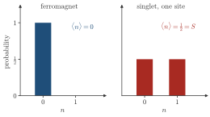
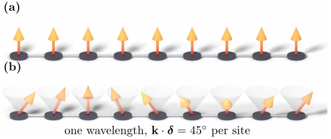
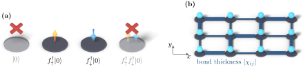

Page 6 of 11 of this session
8.7 Why the Holstein-Primakoff magnon approach fails for QSL excitations
Can magnons describe the excitations of a quantum spin liquid? We will now see that they cannot. The magnon picture needs a small number of bosons per site, while in a spin liquid this number is as large as the spin \(S\), which is (8.9). In the second part of the page we write each spin with two fermions instead, (8.10), and with one fermion per site, (8.11), the Heisenberg bond becomes the bond identity (8.12).
\[S_i^z = S - a_i^\dagger a_i, \qquad S_i^+ = \sqrt{2S-a_i^\dagger a_i}\;a_i, \qquad S_i^- = a_i^\dagger\sqrt{2S-a_i^\dagger a_i}. \tag{6.6}\]
This is the exact Holstein-Primakoff map of Section 6.14 for a spin of size \(S\) on site \(i\). The bosons \(a_i\) and \(a_i^\dagger\) are the magnons, and \(a_i^\dagger a_i\) counts how far the spin is from the fully polarized state \(S_i^z=S\).
It is hard to write the exact QSL ground state. So the natural next step, as in Session 6, is to ask about the excitations on top of the ground state, and not about the ground state itself. Up to now, the only tool that we have for this is the Holstein-Primakoff transformation of Section 6.14, which writes
\[S_i^z = S - a_i^\dagger a_i, \qquad S_i^+ \approx \sqrt{2S}\,a_i, \qquad S_i^- \approx \sqrt{2S}\,a_i^\dagger, \tag{8.8}\]
which is the linearized form (6.7). We linearized under the assumption that the number of bosonic magnons is small, \(\langle a_i^\dagger a_i\rangle \ll S\). This is a very good approximation close to a fully or nearly polarized magnet, which is the regime where we used it in Session 6.
A QSL is in the opposite limit.
The defining property of a QSL, \(\langle \mathbf S_i\rangle = 0\) on every site, gives through (8.8)
\[\langle a_i^\dagger a_i \rangle = S, \tag{8.9}\]
meaning that the boson density is as large as the spin itself. The linearization (8.8) needs \(\langle a_i^\dagger a_i\rangle\ll S\), so it does not hold for a spin liquid.
This is the regime where the condition of a small boson density, the basis of the linearized Holstein-Primakoff mapping, fails completely. For a QSL there is no ordered reference state close to it, around which we can expand. As a result, the magnon method that worked for the ordered magnets of Session 6 is not the right tool here. We need a different approximation for the excitations of a quantum spin liquid. Schematic 8.6 shows the counting for one site.


The linearized Holstein-Primakoff map writes a spin \(S\) with the bosons \(a_i\),
\[S_i^z = S - a_i^\dagger a_i, \qquad S_i^+ \approx \sqrt{2S}\,a_i, \qquad S_i^- \approx \sqrt{2S}\,a_i^\dagger.\]
In a QSL we have \(\langle S^z_i\rangle=0\) with \(S=1/2\). What is \(\langle a_i^\dagger a_i\rangle\)?
Show the answers
- A. ✗ False
This is false. If \(\langle a_i^\dagger a_i\rangle\) were zero then \(\langle S^z_i\rangle=S-0=1/2\), which is the ferromagnet. A zero magnetization requires a finite number of bosons.
- B. ✓ True
This is true. From \(S^z_i=S-a_i^\dagger a_i\) and a zero expectation value we find \(\langle a_i^\dagger a_i\rangle=S\). The linearization needs this number to be small compared with \(S\), so it fails.
- C. ✗ False
This is false. If \(\langle a_i^\dagger a_i\rangle=0.05\) then \(\langle S^z_i\rangle=0.45\), which is nearly a full moment and not a zero one. A zero magnetization needs the value \(S\).
Notebook check-in: session8.ipynb, “Magnetization of a large Heisenberg model” (Core)
Diagonalize a quantum Heisenberg chain of moderate size and check numerically that the local magnetization stays zero on every site. This also holds with a small external field, as long as the field is weaker than the finite-size gap to the neighboring sector of total spin. This is how the defining property behind (8.5) and (8.9) appears in a numerical calculation.
8.8 The parton construction with Abrikosov fermions and the single-occupancy constraint
How can we write a spin with fermions, and what does this cost? The construction that allows us to treat QSL excitations does not write each spin as a bosonic fluctuation around an ordered reference state. Instead, it writes each spin with an auxiliary fermion field \(f_{i\sigma}\) (\(\sigma=\uparrow,\downarrow\)) on every site. This is a particle with spin \(1/2\) and no electric charge, which is the spinon of Section 8.2, now written in a formal way. These particles are called Abrikosov fermions, and the operator identity that defines the parton transformation is
\[\mathbf S_i = \frac12 \sum_{\alpha\beta} f_{i\alpha}^\dagger\, \boldsymbol\sigma_{\alpha\beta}\, f_{i\beta}, \tag{8.10}\]
where \(\boldsymbol\sigma\) is the vector of Pauli matrices. One can check directly, from the anticommutation relations of the fermions, that (8.10) gives the correct \(SU(2)\) spin algebra \([S_i^a,S_i^b] = i\varepsilon^{abc}S_i^c\) on the full Fock space of \(f_{i\uparrow},f_{i\downarrow}\). This Fock space has four states, which are empty, singly occupied with spin up, singly occupied with spin down and doubly occupied. No extra input is needed for this. The problem is that this transformation makes the local Hilbert space artificially larger, since a physical spin-\(1/2\) has only two states, while \(f_{i\uparrow},f_{i\downarrow}\) give four. We remove the two extra unphysical states, which are the empty and the doubly occupied ones and which (8.10) maps to \(\mathbf S_i=0\) in any case. We do this by imposing by hand the single-occupancy constraint.
The single-occupancy constraint keeps one fermion on every site,
\[\sum_\sigma f_{i\sigma}^\dagger f_{i\sigma} = 1 \qquad \text{at every site } i. \tag{8.11}\]
Under this constraint (8.10) is an exact way to write a spin \(1/2\), and the Heisenberg bond \(\mathbf S_i\cdot\mathbf S_j\) becomes the fermion bond identity (8.12).
This is the fermionic analogue of the Gutzwiller projection (8.7) that we applied before to the many-body wavefunction. To project the many-body state onto the singly-occupied subspace and to fix the fermion filling to one per site are the same statement. The first one is seen from the side of the wavefunction, and the second one from the side of the operators. Figure 8.4a shows which two states the constraint has to remove, and why they were never spin states in the first place.
When (8.11) holds, (8.10) is an exact way to write a spin-\(1/2\) operator in the language of fermions, and we can put it directly into the Heisenberg Hamiltonian \(\mathcal H=\sum_{\langle ij\rangle}J_{ij}\,\mathbf S_i\cdot\mathbf S_j\). With the Fierz identity for Pauli matrices \(\sum_a \sigma^a_{\alpha\beta}\sigma^a_{\gamma\delta} = 2\delta_{\alpha\delta}\delta_{\beta\gamma} - \delta_{\alpha\beta}\delta_{\gamma\delta}\) and the constraint (8.11) on both sites, we obtain the simple identity
\[\mathbf S_i \cdot \mathbf S_j = \frac14 - \frac12\, \chi_{ij}^\dagger \chi_{ij}, \qquad \chi_{ij} \equiv \sum_\sigma f_{i\sigma}^\dagger f_{j\sigma}, \tag{8.12}\]
where \(\chi_{ij}\) is the spinon bond operator, or hopping operator, between sites \(i\) and \(j\).
The steps From the Fierz identity to (8.12)
Let us start with the simplest case, one bond in the singlet. With one fermion on each site the singlet is
\[|s\rangle = \frac{1}{\sqrt2}\big(f^\dagger_{i\uparrow}f^\dagger_{j\downarrow} - f^\dagger_{i\downarrow}f^\dagger_{j\uparrow}\big)|0\rangle .\]
The operator \(\chi_{ij}=\sum_\sigma f^\dagger_{i\sigma}f_{j\sigma}\) moves one fermion from \(j\) to \(i\). Both terms of the singlet give the doubly occupied site \(i\) with the same sign, and \(\chi_{ij}^\dagger=\chi_{ji}\) moves the fermion back, so
\[\chi_{ij}|s\rangle = \sqrt2\,f^\dagger_{i\uparrow}f^\dagger_{i\downarrow}|0\rangle, \qquad \chi_{ij}^\dagger\chi_{ij}|s\rangle = 2\,|s\rangle .\]
For the triplet \(f^\dagger_{i\uparrow}f^\dagger_{j\uparrow}|0\rangle\) the fermion of \(j\) cannot move to \(i\), since the state with spin up of site \(i\) is taken, so \(\chi_{ij}^\dagger\chi_{ij}=0\). With \(\mathbf S_i\cdot\mathbf S_j=-3/4\) for the singlet and \(+1/4\) for the triplet, both cases agree with \(\frac14-\frac12\chi_{ij}^\dagger\chi_{ij}\).
For the operator we put (8.10) on both sites and use the Fierz identity, with \(n_i=\sum_\sigma f^\dagger_{i\sigma}f_{i\sigma}\),
\[\mathbf S_i\cdot\mathbf S_j = \frac14\sum_{\alpha\beta\gamma\delta}\big(2\delta_{\alpha\delta}\delta_{\beta\gamma}-\delta_{\alpha\beta}\delta_{\gamma\delta}\big)f^\dagger_{i\alpha}f_{i\beta}f^\dagger_{j\gamma}f_{j\delta} = \frac12\sum_{\alpha\beta}f^\dagger_{i\alpha}f_{i\beta}f^\dagger_{j\beta}f_{j\alpha} - \frac14\, n_in_j .\]
Then we bring the first term to the order of \(\chi_{ij}^\dagger\chi_{ij}=\sum_{\alpha\beta}f^\dagger_{j\alpha}f_{i\alpha}f^\dagger_{i\beta}f_{j\beta}\). Operators of different sites anticommute, and on the same site \(f_{i\alpha}f^\dagger_{i\beta}=\delta_{\alpha\beta}-f^\dagger_{i\beta}f_{i\alpha}\), which gives
\[\sum_{\alpha\beta}f^\dagger_{i\alpha}f_{i\beta}f^\dagger_{j\beta}f_{j\alpha} = n_j-\chi_{ij}^\dagger\chi_{ij}, \qquad \mathbf S_i\cdot\mathbf S_j = \frac12\, n_j-\frac14\, n_in_j-\frac12\,\chi_{ij}^\dagger\chi_{ij} .\]
This holds on all the 16 states of the two sites. With the constraint (8.11) on both sites, \(n_i=n_j=1\), the first two terms give \(\frac12-\frac14=\frac14\), which is (8.12). Without the constraint the two sides of (8.12) differ, by up to \(0.75\) on these 16 states.
When we insert (8.12), the original Heisenberg Hamiltonian, which is bilinear in the spins, becomes a Hamiltonian that is quartic in the auxiliary fermions,
\[\mathcal H = \sum_{\langle ij\rangle} J_{ij}\left(\frac14 - \frac12\,\chi_{ij}^\dagger\chi_{ij}\right) = \text{const} - \frac12\sum_{\langle ij\rangle} J_{ij}\, \chi_{ij}^\dagger \chi_{ij}. \tag{8.13}\]
This is the same problem that we had in Session 1 and Session 6 with the Hubbard interaction (1.7), which is a quartic term that we cannot diagonalize directly. We treat it in the same way as in Section 1.12, with a mean-field decoupling,
\[\chi_{ij}^\dagger\chi_{ij} \;\approx\; \langle\chi_{ij}^\dagger\rangle\,\chi_{ij} + \chi_{ij}^\dagger\,\langle\chi_{ij}\rangle - |\langle\chi_{ij}\rangle|^2. \tag{8.14}\]

With one fermion on each of two sites, the Heisenberg bond is
\[\mathbf S_i \cdot \mathbf S_j = \frac14 - \frac12\, \chi_{ij}^\dagger \chi_{ij}, \qquad \chi_{ij} = \sum_\sigma f_{i\sigma}^\dagger f_{j\sigma}.\]
The bond is in the singlet, with \(\mathbf S_i\cdot\mathbf S_j=-3/4\). What is \(\chi_{ij}^\dagger\chi_{ij}\)?
Show the answers
- A. ✗ False
This is false. This is the value for a triplet, since \(2(\tfrac14-\tfrac14)=0\) with \(\mathbf S_i\cdot\mathbf S_j=+1/4\). Our bond has \(-3/4\).
- B. ✗ False
This is false. This needs \(\mathbf S_i\cdot\mathbf S_j=-1/4\), which is not an eigenvalue of two spin-1/2. The only values are \(-3/4\) and \(+1/4\).
- C. ✓ True
This is true. From the identity we have \(\chi^\dagger\chi=2(\tfrac14-\mathbf S_i\cdot\mathbf S_j)=2\) for the singlet. For a triplet it is \(0\), so the bond operator measures how much singlet there is on the bond.
A spin is written with two fermions on its site as
\[\mathbf S_i = \frac12 \sum_{\alpha\beta} f_{i\alpha}^\dagger\, \boldsymbol\sigma_{\alpha\beta}\, f_{i\beta},\]
where \(\boldsymbol\sigma\) is the vector of Pauli matrices. Which operator is \(S_i^z\)?
Show the answers
- A. ✗ False
This is false. This is half the number of fermions on the site. It gives \(+1/2\) for one fermion with spin down, where \(S_i^z\) must be \(-1/2\).
- B. ✓ True
This is true. The matrix \(\sigma^z\) is diagonal with the entries \(+1\) and \(-1\), so only the terms with \(\alpha=\beta\) remain. One fermion with spin up gives \(S_i^z=+1/2\), and one with spin down gives \(-1/2\).
- C. ✗ False
This is false. This operator turns a fermion with spin down into one with spin up, so it is \(S_i^+=S_i^x+iS_i^y\). On the state with one fermion up it gives \(0\), while \(S_i^z\) gives \(+1/2\).
With one site and its two fermions \(f_\uparrow\) and \(f_\downarrow\), equation (8.10) gives \(S^+=f^\dagger_\uparrow f_\downarrow\), \(S^-=f^\dagger_\downarrow f_\uparrow\) and \(S^z=\tfrac12(n_\uparrow-n_\downarrow)\), with \(n_\sigma=f^\dagger_\sigma f_\sigma\). Show that \([S^+,S^-]=2S^z\), and that \(\mathbf S^2\) is \(3/4\) on the two states with one fermion and \(0\) on the empty and on the doubly occupied state.
Solution
We use \(f_\sigma f^\dagger_\sigma=1-n_\sigma\), and that \(n_\downarrow\) commutes with \(f_\uparrow\). Then
\[S^+S^- = f^\dagger_\uparrow f_\downarrow f^\dagger_\downarrow f_\uparrow = f^\dagger_\uparrow(1-n_\downarrow)f_\uparrow = n_\uparrow(1-n_\downarrow),\]
and in the same way \(S^-S^+=n_\downarrow(1-n_\uparrow)\). Their difference is \(n_\uparrow-n_\downarrow=2S^z\), which is the commutator of a spin. For the square we write \(\mathbf S^2=(S^z)^2+\tfrac12(S^+S^-+S^-S^+)\). With \(n_\sigma^2=n_\sigma\) we have \((S^z)^2=\tfrac14(n_\uparrow+n_\downarrow-2n_\uparrow n_\downarrow)\), and the other two terms give twice this, so
\[\mathbf S^2=\tfrac34\big(n_\uparrow+n_\downarrow-2n_\uparrow n_\downarrow\big)=\tfrac34\,n(2-n),\qquad n=n_\uparrow+n_\downarrow .\]
This is \(S(S+1)=3/4\) for \(S=1/2\) on the states with \(n=1\), and \(0\) for \(n=0\) and \(n=2\). The factor \(n(2-n)\) is the projector \(P_G\) of (8.7) on one site, so the two states that the constraint removes are the ones with no spin. In a mean-field state where each spin state of a site is filled with the probability \(1/2\), independently, a site has one fermion only half of the time, and \(\langle\mathbf S_i^2\rangle=3/8\) instead of \(3/4\). This is the price of imposing (8.11) only on average, as we do in Section 8.9.
Try it. Compute the magnetization of the antiferromagnetic chain with the small field Bz=-0.01. It should vanish on every site, as (8.9) requires. Increase the field until a finite magnetization appears, and compare it with the finite-size gap to the next sector of total spin.
- In Section 8.9 the decoupled Hamiltonian (8.15) is a tight-binding model for spinons at half filling.
- In Section 8.12 the same Abrikosov fermions replace the impurity spins of the Kondo lattice.
- In Section 9.9 the same construction maps a magnetic impurity in a quantum magnet onto an impurity in a chain of spinons.